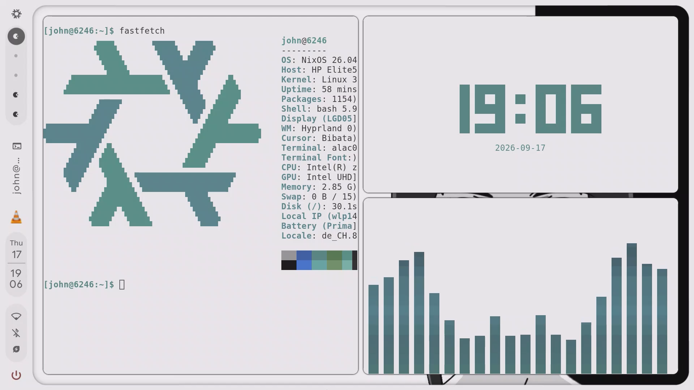
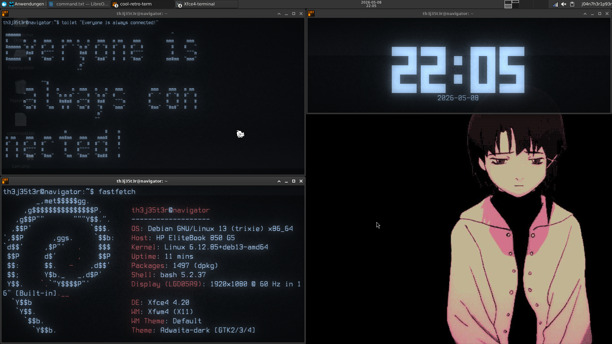
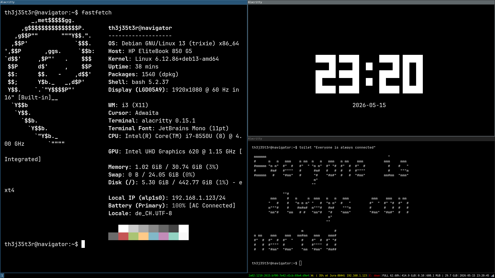
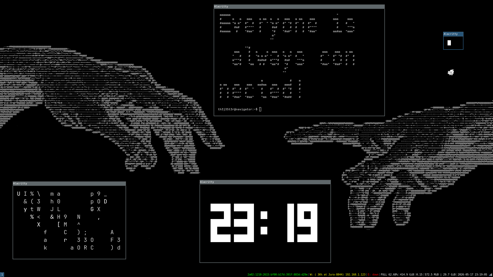

touch: cannot touch 'grass': Permission denied
[sn00py@nixos:~]$ ./joe_cool.sh
[ ok ] sunglasses mounted
[ ok ] woodstock attached
[sn00py@nixos:~]$ whoami
sn00py
[sn00py@nixos:~]$ cat about.txt
hi, i'm sn00py. nixos on hyprland with caelestia shell, and the whole machine rebuilds from one config. i took the long way here: mint, debian, fedora, then arch, void, gentoo and freebsd. i broke something on every single one. nix is the first place where breaking things is cheap.
“nix is the first place where breaking things is cheap.”- sn00py, in a good mood
i write python and bash when i have to. i'm much better at linux than at coding, and i've made peace with that. security is next: fundamentals first, tools after.
neon genesis evangelion is always running somewhere in the back of my head. i post rices and eva stuff on tiktok.
$ neofetch




ok but what do i do when the pc is off? quite a lot actually:
"Pain and suffering are always inevitable for a large intelligence and a deep heart."- dostoevsky
"Man is a mystery. If you spend your whole life trying to work it out, don't say you wasted your time."- dostoevsky
"Beauty will save the world."- dostoevsky
"Everyone thinks of changing the world, but no one thinks of changing himself."- tolstoy
"He who has a why to live can bear almost any how."- nietzsche
"One must imagine Sisyphus happy."- camus
[sn00py@nixos:~]$ _$ sudo rm -rf /
$ nix-shell -p cowsay --run "cowsay it works on my machine"
________________________
< it works on my machine >
------------------------
\ ^__^
\ (oo)\_______
(__)\ )\/\
||----w |
|| ||